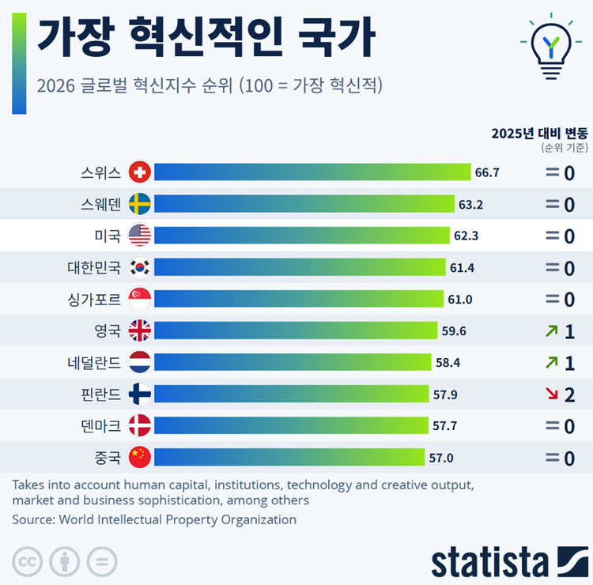
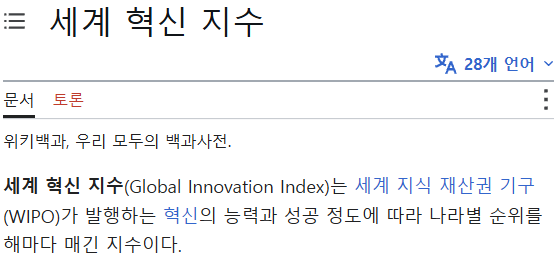

하긴 박진영 비닐바지를 받아주는 사람은 우리밖에 없을 정도로 혁신적이고 선진적이긴 함


우린 받아준적이없어..........
받아준적없다고ㅋㅋㅋㅋ
스위스는 시계말고 또 뭐 있는거냐?
존나 많지 당장 식품 금융 의료 기술 등등 까고보면 스위스회사들인 경우가 많음
겁나많음 금속,화학 공학 회사라던지 금융,의약 탑급이고 네슬레 같은 거대 식품회사나 고급초콜릿 회사들도 있고
초콜렛 맛있긴 한데 스위스답게 가격 고아더라
일단 그레이트 씹쌔끼기업인 네슬레부터 스위스꺼임
고부가가치 산업에 얘들은 선택과 집중을 제대로 하고 있어
난 우리나라가 스위스와 비슷한 전략을 취했으면 좋겠음. 물론 체급이 다르고 상황이 다르지만 말이야
그랫어야 하는데, 못해서 제조업 멸망중
제약 분야도 세계 탑급 노머고가 스위스 제재한다고 할 때 제약 수입 안 한다고 거론할 정도로 큼
임플란트나 보청기 외에도 의료장비도 대단함
SIG-550
AI 나오자마자 받아들이는 속도 봐라 ㅋㅋㅋ
얼마나 혁신적이냐 ㅋㅋ

우리나라 국기 이상해 ㅠ
혁신적이긴 해
우리가 비교대상으로 삼는 게 미국이랑 중국 밖에 없는 이상 당연한 결론인듯
혁신은 없었다 아니었냐고
스씨형제 강하네
중국이 의외네
난 오히려 중국이 순위가 많이 낮다고 생각하는데
응 나도 그말임
제가요 ? 왜요 ?

씨발 미국은 지금 차가 날아다니는데
중국이 국가전체로 봤을때 낮은이유가 혁신이 전국으로 퍼지지 못하고 1선도시 2선도시 이런데만 머물러서 그런가?
사이버펑크 미래도시와 전근대 공업도시가 공존하는 나라도 중국말곤 어디 없긴함 ㅋㅋㅋ
근데 왜 우리 나라 혁신도시들은 다 공실이래
혁신적인 토건 부흥이잖음
혁신이 아니었다면 말포이드는 없었을것
네?